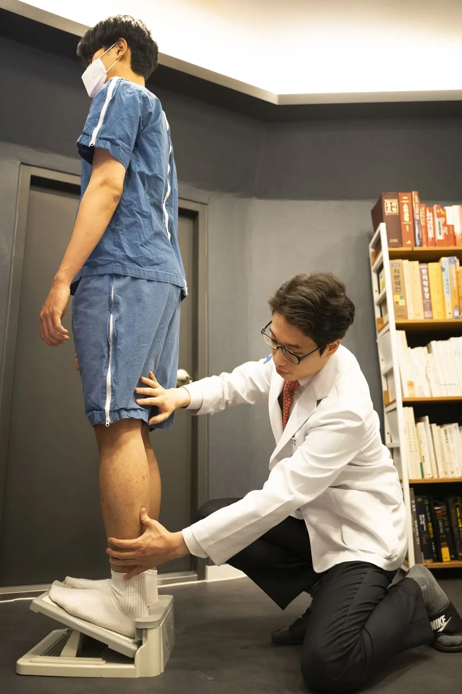
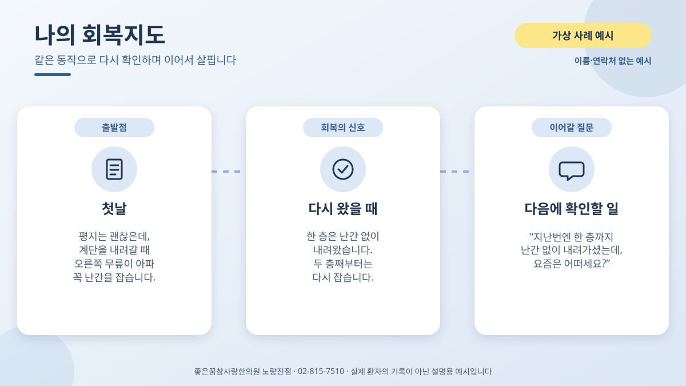

다시 오시나요?

“지난 치료 뒤 일상에서 달라진 점이 하나 있었나요?”
이렇게 편하게 말씀해 주세요.
- 잘 잤어요
- 계단이 편해졌어요
- 아직 그대로예요
지난번에 가장 불편하셨던 곳이 어떻게 변했는지부터 여쭙고, 그에 맞춰 그날의 치료를 조정합니다. 담당 원장이 쉬는 날에 오셔도 다른 원장이 이전 진료 기록을 보고 이어서 진료합니다.
지난번 이야기는 이어서 여쭙니다. 처음부터 다시 설명하지 않으셔도 됩니다.
오래 다니시는 분의 이야기도 처음처럼 이어서 듣겠습니다.
나의 회복지도
이름과 연락처가 없는 예시입니다.

출발점
첫날
평지는 괜찮은데, 계단을 내려갈 때 오른쪽 무릎이 아파 꼭 난간을 잡습니다.
첫날
평지는 괜찮은데, 계단을 내려갈 때 오른쪽 무릎이 아파 꼭 난간을 잡습니다.
회복의 신호
다시 왔을 때
한 층은 난간 없이 내려왔습니다. 두 층째부터는 다시 잡습니다.
다시 왔을 때
한 층은 난간 없이 내려왔습니다. 두 층째부터는 다시 잡습니다.
이어갈 질문
다음에 확인할 일
“지난번엔 한 층까지 난간 없이 내려가셨는데, 요즘은 어떠세요?”
다음에 확인할 일
“지난번엔 한 층까지 난간 없이 내려가셨는데, 요즘은 어떠세요?”